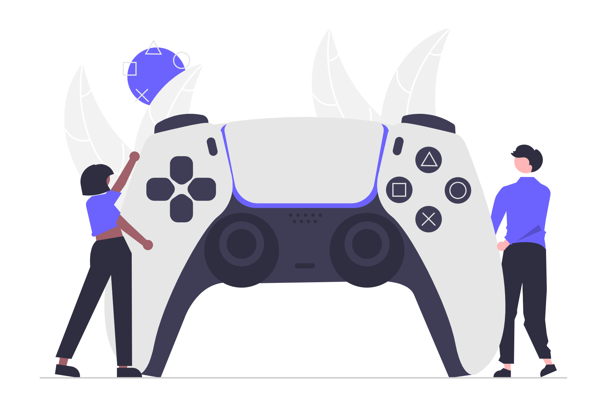

The Sims 4
March 14, 2023 by Gabria

Now, let me talk about my other gaming obsession that's both a blessing and a curse: The Sims 4. Oh boy, where do I even begin with this beautifully broken mess? EA has turned this franchise into the ultimate cash grab, constantly pushing out new expansion packs, game packs, stuff packs, and now "kits" (because apparently we needed even MORE ways to spend money). Lately, it feels like each release is just content they were too lazy to include in earlier packs or, worse yet, stuff that should've been in the base game from day one. The free base game? Let's be real here – it has about as much substance as a cardboard cutout. The gameplay is so bare-bones that you're practically forced to buy their 100+ packs just to have a somewhat entertaining experience. And trust me, at the rate they're churning these out, that number might not be an exaggeration for much longer.
Take the Growing Together Expansion pack, for example – it added infants, an entire life stage that was mysteriously missing for YEARS. Before this, your literal newborn baby would magically age up straight to a toddler (because apparently babies don't exist in EA's world). Seems like a fantastic addition when you first hear about it, right? Then reality hits you like a brick wall when you realize that in order for your precious infants to have actual clothes to wear in Create-A-Sim (because the base game gives them like 5 clothing options), you'd have to shell out an additional €9.99 for The Sims™ 4 Toddler Stuff Pack. It makes you question EA's entire business model and why basic life stage content wasn't included from the beginning. The audacity! Despite all this – the constant bugs, having to download mods just to make the game playable, and those ridiculously overpriced content repackages that should've been free updates – I will forever be a Sims 4 girly. Stockholm syndrome? Maybe. But hey, at least my virtual families are thriving even if my real wallet isn't.